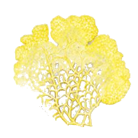

 MetaBLOB
MetaBLOB is an online visualization tool for the metabolism of Physarum Polycephalum . It display a graph that show known reactions of Physarum but also metabolic pathways related to this organism.
A few options are available :
- Saving the graph as an image or save the JSON file used for the visualization.
- Upload a JSON file to obtain a new visualization.
- Modify the layout options to personalized the visualization.
- Change the layout algorithm.
- Show or hide the secondary compounds of the different reactions.